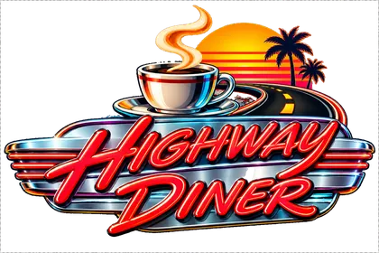
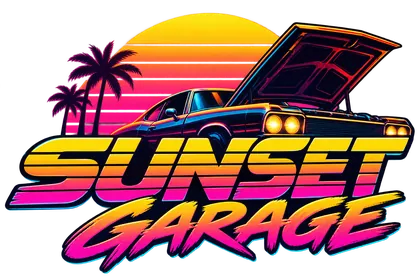

Highway Diner
« La route attendra que vous ayez fini. »Le mot du patron · Doris et Earl Tuttle
- PatronDoris et Earl Tuttle
- Depuis1956
- Adresse450 Palmetto Drive, Highway
Quittez l’échangeur 9 pour Palmetto Drive et arrêtez-vous à la cafetière peinte. - Horaires24 h/24 ; tarte après le café, sauf mardi, conformément au cahier.
Son histoire
Doris et Earl ouvrent en 1956 pour servir les conducteurs avant leur prochaine panne. Elle cuit les tartes ; lui sert pancakes, burgers et frites sans poser le plateau sur les cartes routières.
En 1984, Earl inverse tarte et café un mardi pour sauver une pâte trop chaude. Le client revient le mardi suivant ; Earl inscrit la méthode au règlement plutôt que d’admettre le hasard.
Anecdotes
- En juin 1984, le client Vern Lister commande le menu à 7,99 dollars et vérifie deux fois le café à 8 dollars.
- En mai 1985, Mél prend la queue du comptoir pour un bouchon et obtient ensuite son émission.
- En janvier 1986, Dolores Van Pelt inaugure un tabouret déjà occupé ; Earl attend que le client termine.
La pub
Jouée au premier degré, sur SUNSET DRIVE 102.7 FM.
Vous conduisez depuis deux heures.Écouter SUNSET DRIVE 102.7 FM →
Vous avez faim depuis une heure cinquante-huit.
Highway Diner est ouvert.
Café chaud.
Pancakes.
Burgers.
Frites.
Et tarte maison.
La tarte arrive toujours après le café, sauf le mardi.
Personne ne sait pourquoi.
Le serveur dit que c'est une tradition.
Menu complet : 7 dollars 99.
(pause)
Le café coûte 8 dollars.
(petit rire)
Highway Diner.
La route peut bien patienter.
---
# NEON 103.5
## NEON 103.5
À savoir
- Le café se commande séparément ; Doris le fait préciser avant de servir.
- Le mardi est souligné en rouge sur les sept pages du planning.
Le voisin

Sunset GarageSunset Garage est à quatre numéros ; Doris lui garde une table assez loin pour ne pas écouter les moteurs.